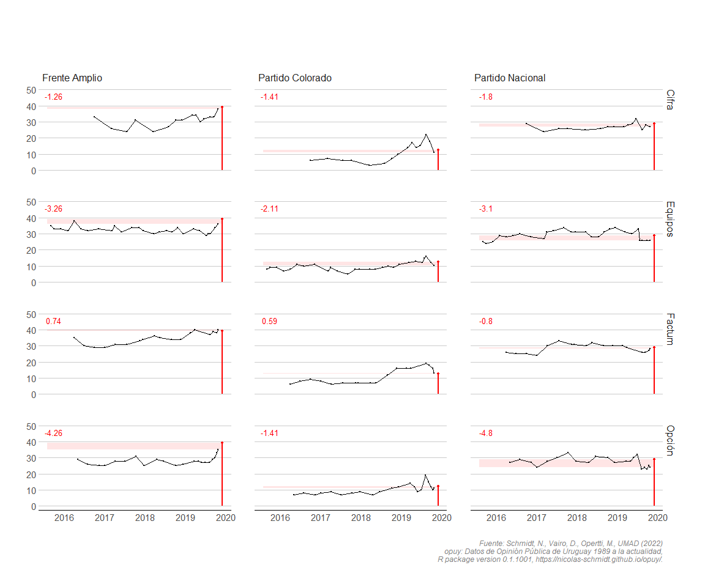

Nicolás Schmidt, Daniela Vairo, Martín Opertti, UMAD1.
Uruguayan Public Opinion Data From 1989 to the Present.
Description
OPUY provides a set of Uruguay’s public opinion data since 1989. The data features two relevant indicators for the study of the Uruguay’s political behavior: vote intention and presidential approval.
The package manual can be found here.
Install
remotes::install_github("Nicolas-Schmidt/opuy")Package Features
Functions
| Name | Description |
|---|---|
resumen_opuy |
A summary of the indicators the dataset contains by year. This function has it’s own print() and summary() methods. |
Data
| Name | Description |
|---|---|
opuy |
Datset that contains two public opinion indicators: vote intention and presidential approval. Data available ranges from 1989 to the present. Data was collected from polling organizations records and news articles by Unidad de Métodos y Acceso a Datos. All data is at the aggregate level, as no individual-level data is available. |
Example
## Dataset: 'opuy'
library(opuy)
summary(resumen_opuy())
#> # A tibble: 12 × 6
#> Empresa Indicador Mediciones Periodo Anios Ratio
#> <chr> <chr> <int> <chr> <dbl> <dbl>
#> 1 Equipos Evaluacion de gestion presidente 193 1990-20… 33 6
#> 2 Cifra Evaluacion de gestion presidente 53 2000-20… 23 2
#> 3 Opcion Evaluacion de gestion presidente 31 2014-20… 9 3
#> 4 Factum Evaluacion de gestion presidente 27 2000-20… 21 1
#> 5 Interconsult Evaluacion de gestion presidente 15 2005-20… 5 3
#> 6 Radar Evaluacion de gestion presidente 3 2005-20… 7 0
#> 7 Factum Intencion de voto 154 1993-20… 30 5
#> 8 Equipos Intencion de voto 117 1989-20… 34 3
#> 9 Cifra Intencion de voto 93 1993-20… 30 3
#> 10 Radar Intencion de voto 69 1998-20… 21 3
#> 11 Interconsult Intencion de voto 64 1998-20… 19 3
#> 12 Opcion Intencion de voto 29 2014-20… 5 6
resumen_opuy(polling.org = c("Equipos", "Cifra", "Factum", "Opcion"))
#>
#>
#> ---- Resumen de Indicadores por anio y consultora ---------------------------
#>
#>
#> Equipos Cifra Factum Opcion
#> ----- --------------- --------------- --------------- ---------------
#> 1989 IV (06)| - - | - - | - - | -
#> 1990 IV (01)|EG (02) - | - - | - - | -
#> 1991 IV (02)|EG (02) - | - - | - - | -
#> 1992 IV (02)|EG (03) - | - - | - - | -
#> 1993 IV (06)|EG (06) IV (08)| - IV (03)| - - | -
#> 1994 IV (11)|EG (12) IV (11)| - IV (12)| - - | -
#> 1995 - |EG (08) - | - IV (01)| - - | -
#> 1996 - |EG (12) - | - IV (03)| - - | -
#> 1997 IV (01)|EG (12) - | - IV (08)| - - | -
#> 1998 IV (01)|EG (12) - | - IV (13)| - - | -
#> 1999 IV (09)|EG (06) IV (07)| - IV (16)| - - | -
#> 2000 - |EG (03) - |EG (02) IV (01)|EG (07) - | -
#> 2001 - |EG (04) - | - IV (03)|EG (07) - | -
#> 2002 IV (01)|EG (04) - | - IV (03)|EG (01) - | -
#> 2003 - |EG (04) IV (03)| - IV (03)| - - | -
#> 2004 IV (07)|EG (04) IV (10)| - IV (15)| - - | -
#> 2005 - |EG (05) - |EG (02) - | - - | -
#> 2006 - |EG (06) - | - - |EG (02) - | -
#> 2007 - |EG (06) - | - IV (02)| - - | -
#> 2008 IV (01)|EG (06) IV (03)|EG (01) IV (04)| - - | -
#> 2009 IV (10)|EG (05) IV (11)| - IV (11)| - - | -
#> 2010 IV (03)|EG (06) - |EG (02) IV (02)|EG (01) - | -
#> 2011 IV (06)|EG (02) IV (01)|EG (04) IV (04)| - - | -
#> 2012 IV (03)|EG (04) IV (04)|EG (06) IV (04)| - - | -
#> 2013 IV (02)|EG (04) IV (06)|EG (03) IV (05)| - - | -
#> 2014 IV (11)|EG (05) IV (10)|EG (05) IV (14)| - IV (06)|EG (02)
#> 2015 IV (03)|EG (06) - |EG (02) - |EG (03) - |EG (01)
#> 2016 IV (05)|EG (05) IV (01)|EG (03) IV (04)|EG (03) IV (03)|EG (05)
#> 2017 IV (06)|EG (03) IV (03)|EG (03) IV (04)|EG (01) IV (05)|EG (04)
#> 2018 IV (06)|EG (04) IV (04)|EG (04) IV (04)| - IV (04)|EG (04)
#> 2019 IV (11)|EG (01) IV (08)|EG (02) IV (10)| - IV (11)|EG (03)
#> 2020 - |EG (07) - |EG (03) - | - - |EG (02)
#> 2021 - |EG (12) - |EG (05) IV (01)|EG (02) - |EG (04)
#> 2022 IV (01)|EG (09) IV (01)|EG (04) IV (02)| - - |EG (04)
#> 2023 IV (02)|EG (03) IV (02)|EG (02) IV (02)| - - |EG (02)
#>
#>
#> IV: Intencion de Voto
#> EG: Evaluacion de gestion
#>
#> Entre parentesis se indica la cantidad de mediciones.
#>
#> -----------------------------------------------------------------------------Presidential Approval in Uruguay
library(tidyverse)
library(hrbrthemes)
data(opuy)
dias_sumar <- Sys.Date() - as.Date("2020-03-01")
annotation <- tibble(x = as.Date(c("1992-01-01","1997-06-06", "2002-06-06", "2007-06-06",
"2012-06-06", "2017-06-06", "2022-01-01")),
y = 85,
label = c("Lacalle","Sanguinetti II", "Batlle", "Vázquez I",
"Mujica", "Vázquez II", "Lacalle Pou"),
comienzo = as.Date(c("1990-03-01", "1995-03-01", "2000-03-01", "2005-03-01",
"2010-03-01", "2015-03-01", "2020-03-01"))) %>%
mutate(ahora = comienzo + dias_sumar)
fechas <- as.Date(c("1995-03-01","2000-03-01", "200-03-01", "2010-03-01", "2015-03-01", "2020-03-01"))
colores <- c("#99ccff", "#BA0200", "#BA0200", "#013197", "#013197", "#013197", "#99ccff")
opuy %>%
filter(medicion == 'Evaluacion de gestion presidente',
categoria_unificada == 3) %>%
select(fecha, empresa, valor, presidente) %>%
mutate(presidente = factor(presidente, levels = c("Lacalle", "Sanguinetti 2",
"Batlle", "Vazquez 1", "Mujica",
"Vazquez 2", "Lacalle Pou"))) %>%
ggplot(aes(x = fecha, y = valor, color = presidente)) +
geom_smooth(aes(group = presidente), method="loess", se=FALSE) +
geom_point(size = 2, alpha=0.3) +
geom_vline(xintercept = as.numeric(fechas), linetype="dashed", size=0.3, color="grey30") +
theme_minimal() +
theme(legend.position = "none") +
labs(y = "Porcentaje de aprobación",
x = "",
title = "Aprobación del presidente (serie histórica)",
caption = 'Fuente: opuy (Schmidt et al. 2022)'
) +
geom_text(data=annotation, aes( x=x, y=y, label=label),
color="black", size=4) +
scale_fill_manual(name = "", values = colores) +
scale_color_manual(name = "", values = colores) +
scale_x_date(date_breaks = "2 years", date_minor_breaks = "1 year",
date_labels = "%Y", limits = c(as.Date("1990-01-01"), NA)) +
annotate("rect",
xmin = annotation$comienzo,
xmax = annotation$ahora,
ymin = 0,
ymax = Inf, alpha = .1)
Combined use of opuy package with Boreluy (R package with electoral data from Uruguay)
The graphic palette presented contains data from four polling organizations on voting intentions for the October 2019 national election. The line and the red dot indicate the result that each party obtained in the election. The horizontal red band is made up of the points of the last vote intention measurement of each polling organization and the result of the election. The red number at the top left of each graph indicates the distance between the last estimate and the result of the election.

📑 Citation
Pleas cite the use of data or opuy package. Use the following citation:
Schmidt, Nicolás, Vairo, Daniela, Opertti, Martín , UMAD (2022) opuy: Datos de Opinión Pública de Uruguay 1989 a la actualidad, R package version 0.1.1001, https://nicolas-schmidt.github.io/opuy/.
Maintainer
Nicolás Schmidt (nschmidt@cienciassociales.edu.uy)
Notes
1 Unidad de Métodos y Acceso a Datos, Facultad de Ciencias Sociales, Universidad de la República (UMAD-FCS-UdelaR)